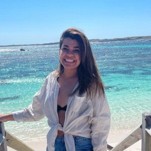
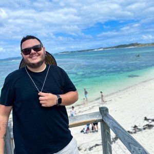

Conheca o Casal

 
Dia. Noite. Quente. Frio. Praia. Serra. Agitação. Calmaria. Emoção. Razão.
Duas personalidades tão diferentes, que se completam tanto e tão bem.
Uma amiga em comum. Uma quinta feira qualquer. Um caranguejo e uma cerveja.
Um encontro casual, em um dia normal. O caranguejo que foi por tantas vezes uma
rotina deu lugar a outros encontros e lugares. Um café da tarde na Doce Gula,
um almoço no Outback e finalmente um jantar no La Bella Italia.
Uma segunda feira de janeiro. Aquele Janeiro.
8 janeiros depois, tantos cafés, tantos almoços, tantos jantares, tantas cervejas,
churrascos, viagens, tantas histórias, incontáveis aventuras e ainda faltava a mais
louca e desafiadora de todas: mudar de país. Viver o desconhecido ao lado de quem te
conhece tão bem só nos fez ter mais certeza do que já sabíamos desde
o primeiro dia: casa é onde eu estou com você.